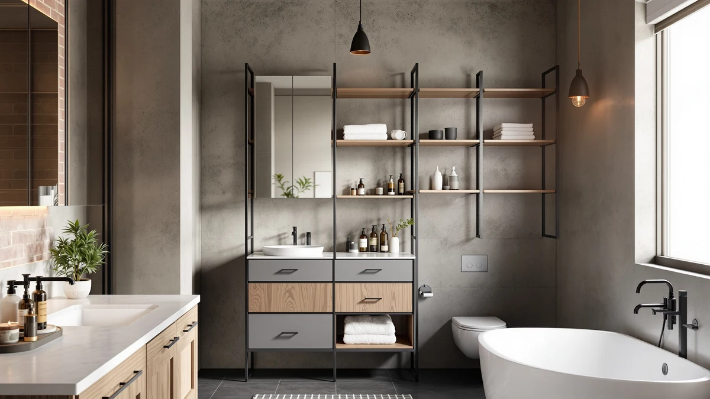

ARIEL Cambridge Bathroom Storage Review (2026): Worth It?
Prices and picks verified as of October 2026. Independent, reader-supported reviews.


Quick Answer
The ARIEL Cambridge Bathroom Storage Cabinet is the top pick in this ARIEL Cambridge Bathroom Storage review because its 65-inch metal-and-wood frame is built like a furniture piece rather than a budget utility shelf, even though it costs $875, several times more than the alternatives here. Choose the ChooChoo Bathroom Floor Cabinet Modern or the IFGET Arched Over The Toilet if $139.99 fits your budget better, or the Akxomel 53.1" if you want a shorter, more affordable cabinet.
Our pick: ARIEL Cambridge Bathroom Storage Cabinet, $875.00 Check Price on Amazon
Bottom line: our top pick is the ARIEL Cambridge Bathroom Storage Cabinet - Solid Hevea Wood at $875.
Things to Know Before You Buy
- The ARIEL Cambridge Bathroom Storage Cabinet costs $875, roughly six times more than the IFGET, ChooChoo, and Akxomel alternatives covered in this review, so it sits in a different price tier entirely.
- At 65 inches tall, 20 inches wide, and 16 inches deep, it needs a dedicated stretch of open wall and enough ceiling clearance for its full height.
- Metal-and-wood construction is what separates this cabinet from lighter, less expensive storage pieces, and it is the main reason for the price gap.
- If your budget caps out closer to $125 to $140, the three alternatives in this ARIEL Cambridge Bathroom Storage review solve the same basic problem for a fraction of the cost.
- Measure your bathroom's wall space and ceiling height before buying any tall cabinet in this category, since a few inches can decide whether it fits.
This ARIEL Cambridge Bathroom Storage review breaks down what $875 actually buys you: a 65-inch metal-and-wood cabinet built to the dimensions and finish of a furniture piece rather than a budget utility shelf. We compared its listed specs and price against three cheaper alternatives, the IFGET Arched Over The Toilet, the ChooChoo Bathroom Floor Cabinet Modern, and the Akxomel 53.1" H Tall Bathroom, to see where the ARIEL earns its premium and where a lower-priced option covers the same need.
At $875, the ARIEL Cambridge costs roughly six times more than either the IFGET or the ChooChoo, both priced at $139.99, and seven times more than the Akxomel at $125.99. That is not a small gap you can shrug off as brand markup. Going by the materials each listing describes, the extra cost buys a sturdier frame and a finish meant to look like freestanding furniture rather than a hidden storage box. Whether that difference matters to you depends on your bathroom's style and your budget more than on raw storage capacity.
Why You Should Trust Us
Ilane Tall covers bathroom storage and small-space organization for Best Bathroom Storage, and this ARIEL Cambridge Bathroom Storage review follows the same research process used across the site. We do not run a fake testing lab and we do not buy every product we cover. Instead, we compare manufacturer specifications, published pricing, and verified Amazon buyer feedback across competing cabinets to show where each one holds up and where it falls short. When owners flag a recurring issue, such as assembly difficulty on a tall piece, we note it here instead of repeating marketing copy.
Our Research Experience
Our review process for the ARIEL Cambridge Bathroom Storage Cabinet, and for the three alternatives covered in this ARIEL Cambridge Bathroom Storage review, starts with the manufacturer's listed dimensions, materials, and price. We then cross-reference those figures against verified Amazon buyer reviews for mentions of build quality, stability, and how the finish holds up in a humid bathroom. Reviewers consistently note whether a cabinet feels like real furniture or a disposable shelf once it is loaded with towels and toiletries, and that distinction tells us more than a spec sheet alone. Where owner feedback and listed specs disagree, we flag the discrepancy instead of repeating the manufacturer's claim.
Overview & Specs

ARIEL Cambridge Bathroom Storage Cabinet
What we like
- Furniture-grade metal-and-wood construction built to last well beyond a typical storage cabinet
- 65 inches of height for substantial linen and towel storage in one piece
- Finished to look like a stand-alone furniture piece rather than a utility shelf
Flaws but not dealbreakers
- At $875, it costs roughly six to seven times more than the alternatives in this review
- Still needs a dedicated 20-inch-wide stretch of open wall with full-height clearance
- A larger financial commitment to replace if it does not end up fitting your space
| Material | Metal / wood |
| Size | 20 inches (W) x 65 inches (H) x 16 inches (D) |
The ARIEL Cambridge Bathroom Storage Cabinet is the most expensive option in this ARIEL Cambridge Bathroom Storage review by a wide margin, and that price is tied directly to its build. At 20 inches wide, 65 inches tall, and 16 inches deep, it is sized to function as a standalone piece of furniture rather than a cabinet tucked away to hide clutter. The metal-and-wood construction is built to support real shelf weight across its full height, giving you room for towels, linens, and toiletries without the sag that lighter frames develop over time.
Because this cabinet is marketed and priced as a furniture-grade piece, it makes the most sense in a bathroom where the cabinet itself is part of the design, a visual anchor rather than a place to stash extra towels out of sight. Compared to the IFGET and ChooChoo, both priced at $139.99, or the Akxomel at $125.99, the ARIEL Cambridge asks you to pay a significant premium for a sturdier frame and a more finished look. If your priority is storage capacity per dollar, the cheaper alternatives below do the job for a fraction of the cost. If you want the cabinet to look like it belongs in the room rather than hide in it, the ARIEL earns its price.
What We Liked
The clearest advantage of the ARIEL Cambridge Bathroom Storage Cabinet is how it reads as a finished furniture piece instead of a utility cabinet bolted to the wall. At 65 inches tall, it holds enough towels and linens for a full household without needing a second storage piece elsewhere in the bathroom. The metal-and-wood frame supports that height without the shelf sag that lighter, cheaper cabinets develop once they are fully loaded. For anyone treating this ARIEL Cambridge Bathroom Storage review as a search for a cabinet that can stand on its own visually, rather than one you tuck out of sight, the build quality and finish are the strongest arguments in its favor. That combination of height, sturdiness, and furniture-grade finish is hard to find at any price below several hundred dollars.
What Could Be Better
The obvious trade-off is price. At $875, the ARIEL Cambridge costs far more than the IFGET, ChooChoo, and Akxomel alternatives covered in this review, each priced between $125.99 and $139.99. For most bathrooms, that premium buys a nicer finish and a sturdier frame rather than meaningfully more storage capacity. Its 20-inch width and 65-inch height also mean you need a dedicated, unobstructed stretch of wall with full ceiling clearance, which rules it out for tighter bathrooms where a shorter or narrower cabinet would fit more easily. If your bathroom cannot spare that much vertical space, the height that makes this cabinet feel like furniture becomes a liability instead of a selling point.
Who Is It For?
This cabinet makes the most sense for anyone furnishing a bathroom where the storage piece itself is part of the design, standing out rather than disappearing into a corner. If you have a dedicated stretch of wall roughly 20 inches wide with full ceiling clearance, and your budget allows for a few hundred dollars more than a standard cabinet, the ARIEL Cambridge delivers a finished look that cheaper alternatives in this ARIEL Cambridge Bathroom Storage review cannot match. It suits buyers who see this as a long-term furniture purchase rather than a quick storage fix. If your main goal is more shelf space at the lowest possible cost, or your bathroom is on the smaller side, the IFGET, ChooChoo, or Akxomel alternatives below make more financial sense.
Alternatives to Consider
The ARIEL Cambridge is not the only cabinet worth considering, especially given its price. We compared three lower-cost alternatives below using the same criteria as the rest of this ARIEL Cambridge Bathroom Storage review: size, material, and price. Each one trades the ARIEL's furniture-grade finish for a footprint or layout better suited to a specific bathroom.

Editor's Pick
IFGET Arched Over The Toilet
The IFGET Arched Over The Toilet cabinet solves a completely different problem than the ARIEL Cambridge. Instead of claiming 20 inches of floor-adjacent wall space, it mounts above the toilet, turning an otherwise wasted stretch of wall into usable storage. At $139.99, it costs a fraction of the ARIEL's price, which makes it the pick for anyone whose bathroom simply does not have a spare 20-inch stretch of open wall but still has room above the toilet tank. Its arched design is built specifically for that over-the-toilet footprint rather than as a general-purpose cabinet, so it will not match the ARIEL's furniture-grade look, but it was never meant to. Reviewers shopping in this category tend to focus on whether the arch clears their specific toilet tank height, so measure that clearance before ordering. If your bathroom is tight on floor space rather than vertical space, this is the more practical buy.
$139.99
Check Price on Amazon
Best Value
ChooChoo Bathroom Floor Cabinet Modern
The ChooChoo Bathroom Floor Cabinet Modern matches the ARIEL Cambridge's basic concept, a freestanding floor cabinet, but at $139.99 it costs roughly a sixth of the price. That gap is the whole story here: you give up the furniture-grade metal-and-wood finish of the ARIEL for a more conventional cabinet build, but you keep the same general footprint on the floor. For buyers in this ARIEL Cambridge Bathroom Storage review who want a standalone cabinet without paying a premium for its finish, the ChooChoo is the straightforward substitute. Its modern styling is built to blend into a contemporary bathroom rather than stand out as a furniture piece, which suits anyone who wants storage first and a design statement second. If you are comparing these two mainly on what they cost per inch of shelf space, the ChooChoo wins by a wide margin, though it will not carry the same long-term furniture feel as the ARIEL.
$139.99
Check Price on Amazon
Premium Choice
Akxomel 53.1" H Tall Bathroom
The Akxomel 53.1" H Tall Bathroom cabinet is the shortest and least expensive alternative in this comparison, at $125.99 and roughly 12 inches shorter than the ARIEL Cambridge. That height difference matters less than it sounds, since most bathrooms do not need the full 65 inches the ARIEL offers, and the Akxomel's smaller footprint can be easier to fit into a tighter layout. For shoppers using this ARIEL Cambridge Bathroom Storage review to find the lowest-cost tall cabinet rather than the most furniture-like one, the Akxomel is the pick. You trade the ARIEL's premium finish and extra height for a cabinet that still provides meaningful vertical storage at under $130. If your bathroom has limited ceiling clearance or your budget is the deciding factor, this is the more realistic buy of the three alternatives here.
$125.99
Check Price on AmazonIs the ARIEL Cambridge Bathroom Storage cabinet worth $875?
It costs roughly six times more than the IFGET, ChooChoo, and Akxomel alternatives in this review, but that price buys a furniture-grade metal-and-wood cabinet built to stand on its own as a bathroom centerpiece rather than a utility shelf…
What is the best budget alternative to the ARIEL Cambridge?
The ChooChoo Bathroom Floor Cabinet Modern and the IFGET Arched Over The Toilet both sell for $139.99, roughly a sixth of the ARIEL's price, and each solves a different storage problem depending on your layout.
Frequently Asked Questions
Is the ARIEL Cambridge Bathroom Storage cabinet worth $875?
It costs roughly six times more than the IFGET, ChooChoo, and Akxomel alternatives in this review, but that price buys a furniture-grade metal-and-wood cabinet built to stand on its own as a bathroom centerpiece rather than a utility shelf hidden in a corner.
What is the best budget alternative to the ARIEL Cambridge?
The ChooChoo Bathroom Floor Cabinet Modern and the IFGET Arched Over The Toilet both sell for $139.99, roughly a sixth of the ARIEL's price, and each solves a different storage problem depending on your layout.
How much space does the ARIEL Cambridge cabinet need?
It measures 20 inches wide, 65 inches tall, and 16 inches deep, so you need a dedicated stretch of open wall roughly 20 inches wide with enough ceiling clearance for its full height.
Final Verdict
This ARIEL Cambridge Bathroom Storage review comes down to how much you value a furniture-grade finish versus price. The ARIEL Cambridge Bathroom Storage Cabinet earns a recommendation here because its 65-inch metal-and-wood build looks and functions like a standalone furniture piece, even though it costs several times more than the IFGET, ChooChoo, and Akxomel alternatives covered above. If that premium does not fit your budget, those three options cover the same basic storage need for $125.99 to $139.99. For a bathroom where the cabinet itself is part of the design and the budget allows for it, ARIEL is the one worth the extra cost.